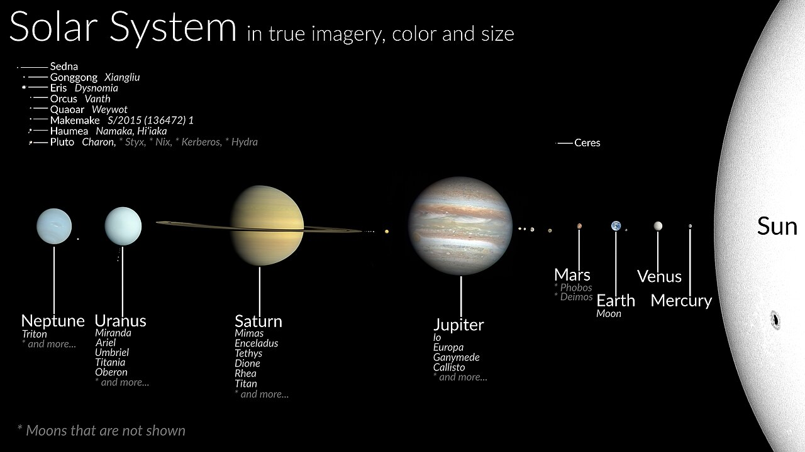
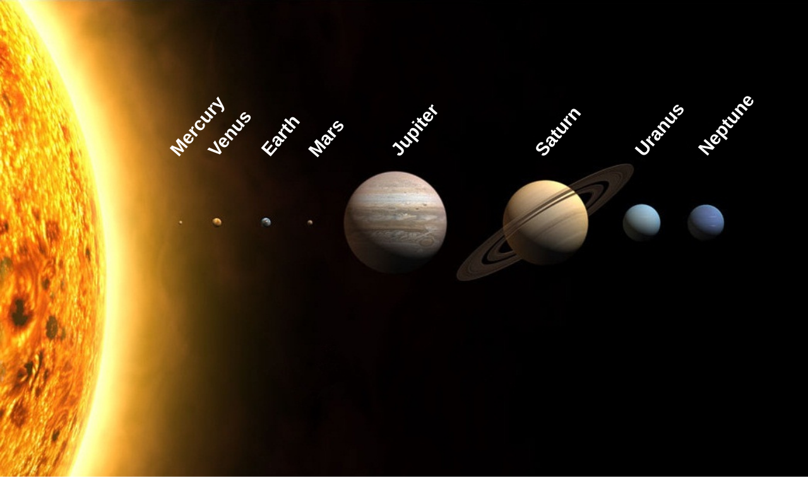
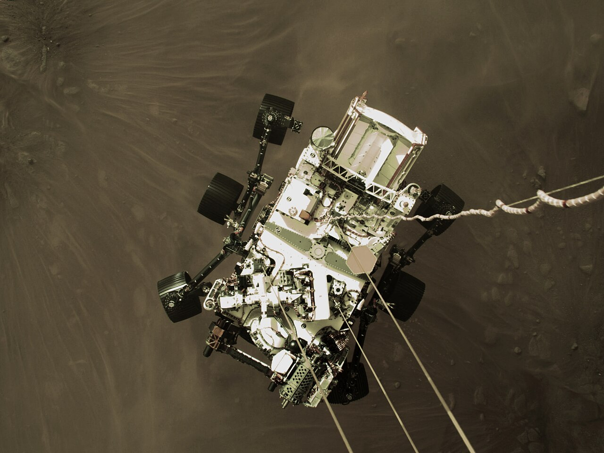

SOLAR SYSTEM

🌌
2026 과학 탐구
태양계 탐험
행성과 우주의 신비를 찾아서
고등학교 지구과학
·
학습 목표
🎯 학습 목표
- 태양계를 구성하는 행성의 종류와 특징을 설명할 수 있다
- 내행성과 외행성의 차이점을 비교하고 분류할 수 있다
- 태양계 탐사의 역사와 최신 탐사 성과를 이해한다
- 우주 탐사의 과학적 의의와 미래 가능성을 토론할 수 있다
태양계 구조
🪐 태양계의 구조
태양을 중심으로 8개의 행성이 공전합니다

🌍태양계 구조도
태양계 행성의 상대적 크기와 배열 순서 (출처: Wikimedia Commons)
내행성
🌎 내행성: 수성, 금성, 지구, 화성
태양에 가까운 암석형 행성들
☿
수성 (Mercury)
태양에서 가장 가까운 행성. 대기가 거의 없으며 표면 온도 차이가 극심함 (-180~430도)
♀
금성 (Venus)
두꺼운 이산화탄소 대기로 온실효과가 극대화. 표면 온도 약 465도로 가장 뜨거운 행성
🌍
지구 (Earth)
생명체가 존재하는 유일한 행성. 액체 상태의 물과 적절한 대기 조건을 갖춤
♂
화성 (Mars)
붉은 행성. 극관에 얼음이 존재하며 과거 물이 흘렀던 흔적이 발견됨
외행성
🪐 외행성: 목성, 토성, 천왕성, 해왕성
거대 가스/얼음 행성들
♃
목성 (Jupiter)
태양계 최대 행성. 대적반(거대 폭풍)이 300년 넘게 지속. 79개 이상의 위성 보유
♄
토성 (Saturn)
아름다운 고리가 특징. 밀도가 물보다 낮아 물에 뜰 수 있을 정도로 가벼운 행성
⛢
천왕성 (Uranus)
자전축이 98도 기울어진 독특한 행성. 메탄 대기로 인해 청록색을 띔
♆
해왕성 (Neptune)
태양계에서 가장 강한 바람이 부는 행성. 풍속이 시속 2,100km에 달함
크기 비교
📊 행성의 크기 비교
142,984
목성 지름 (km)
120,536
토성 지름 (km)
12,756
지구 지름 (km)
4,879
수성 지름 (km)
목성은 지구보다 약 11배 큰 지름을 가지며, 태양계 전체 행성 질량의 약 70%를 차지합니다. 만약 목성이 80배 더 무거웠다면, 스스로 핵융합을 시작해 항성이 될 수 있었습니다.
탐사 역사
🚀 태양계 탐사 역사
스푸트니크 1호 발사
소련이 세계 최초의 인공위성 발사에 성공
아폴로 11호 달 착륙
닐 암스트롱이 인류 최초로 달 표면을 밟음
보이저 1호, 2호 발사
외행성 탐사 후 현재 태양계 밖으로 향하는 중
퍼서비어런스 로버 화성 착륙
NASA의 화성 탐사 로버가 생명 흔적 탐색 시작
화성 탐사
🔬 화성 탐사: 퍼서비어런스 로버

🤖퍼서비어런스 로버
주요 임무
- 고대 미생물 생명체 흔적 탐색
- 화성 암석 및 토양 샘플 수집
- 인제뉴이티 헬리콥터 비행 시험
- 이산화탄소에서 산소 생성 실험 (MOXIE)
- 미래 유인 탐사를 위한 환경 데이터 수집
핵심 정리
📝 핵심 정리
- 태양계는 태양과 8개의 행성, 왜소행성, 소행성, 혜성 등으로 구성됨
- 내행성(수금지화)은 암석형, 외행성(목토천해)은 가스/얼음형으로 분류됨
- 행성 간 크기와 특성의 차이는 형성 과정과 태양으로부터의 거리에 기인함
- 현재 화성 탐사가 활발히 진행되며, 미래 유인 탐사를 준비 중
다음 시간에는 별과 은하, 우주의 구조에 대해 학습합니다.
Q&A
🌌
질문과 토론
우주에 대해 궁금한 점을 자유롭게 이야기해봅시다
토론 주제
- 인류는 화성에 정착할 수 있을까?
- 태양계 밖에도 생명체가 존재할 가능성은?
- 우주 탐사에 투자하는 것은 가치가 있는가?